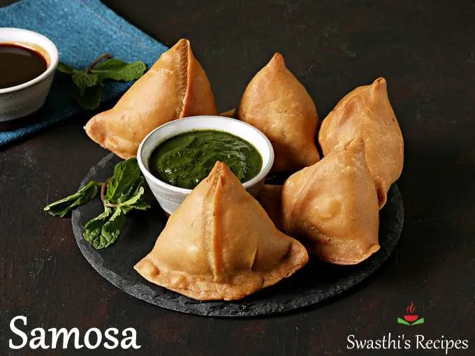

Samosa Recipe

Description
The picture above depicts Samosas, a traditional South Asian cuisine dated to Nepal and India. It is delicious and filled with potatoes, herbs, and more ingredients.
Ingredients
-
Species
- Ajwain seeds
- Amchur
- Asafoetida
- Black mustard seeds
- Garam Masala
- Cumen seeds and power
- Coriander seeds
- Turmeric
- Flour
- Green Chilli
- Ghee or oil
- Potatos
- Ginger
- Peas
- Coriander/cilantro
Steps
- Boil the potatoes then mash it roughly until it is done
- Cook spices with health dose of fresh ginger and chilli with peas
-
Add the mashed potates and mix with the cooked species
-
Add fresh coriander then let it cool
-
To make the dough, first mix the flour, Ajwain seeds and salt, then pour the ghee or oil in
-
Form a dough and let it rest for 30 minutes
-
Shape the dough into balls and roll them out to 2 mm thick sheet
-
Cut the sheet in half and brush the sides with water
-
Form a cone and place some potato filing we made earlier inside the cone
-
Seal the cone and pinch top of conee to make it pointy and nice
-
Now fry the sealed pastry for 3 minutes at 160°C/320°F
-
Let the oil drain on the paper towel then fry again until golden
-
Lastly, drain the oil on paper toweel and you are done!